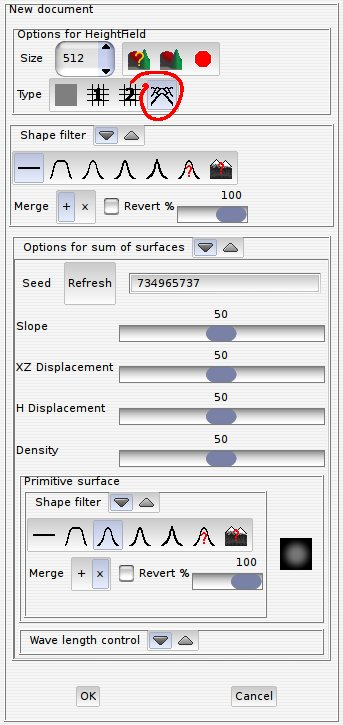
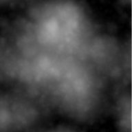
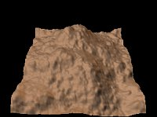
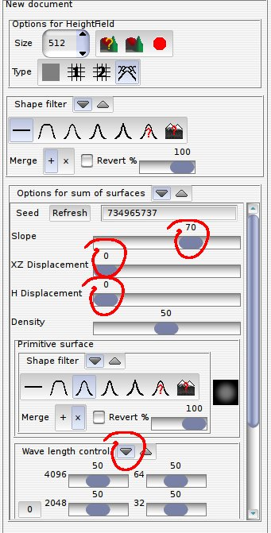
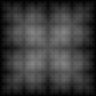
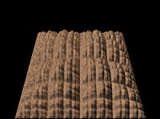
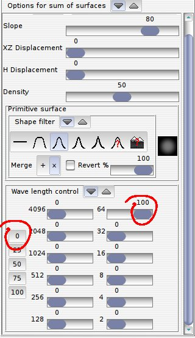

|  |
These are the
default settings you get when choosing the "progressive sum of surface"
icon in the "New document" dialog.
Notice that the first "shape filter" is global to the image, while the "shape filter" related to the "primitive surface" controls the gaussian bell used as a building block. The "Seed" parameter is used to change pseudo-randomly the global distribution of the surfaces.  This is a scaled down version of the 512x512 height field generated.  |
|  | Without the random factor displacing the bells on the plane ("XZ Displacement"), or the one varying the height of the bells ("H Displacement"), we obtain a cracker-looking height field. We increase the slope from 50 to 70 because the result has a too low altitude. This means using higher bells as building blocks.   We unroll the "Wave length control" for the next step... |
|  | Set all the wave
lengths to 0, then set the 64-pixel to 100, and
you're done! |
Contact: Patrice St-Gelais